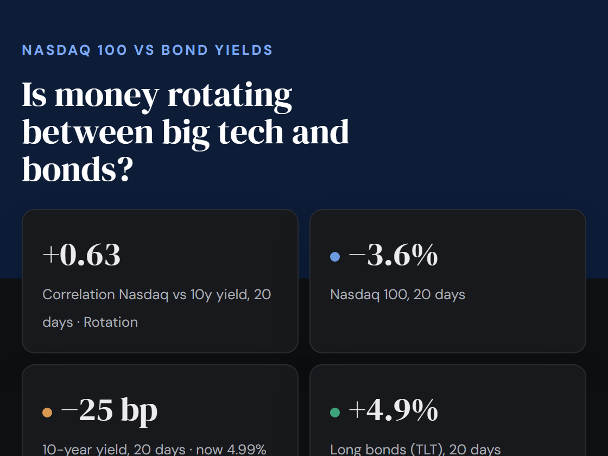
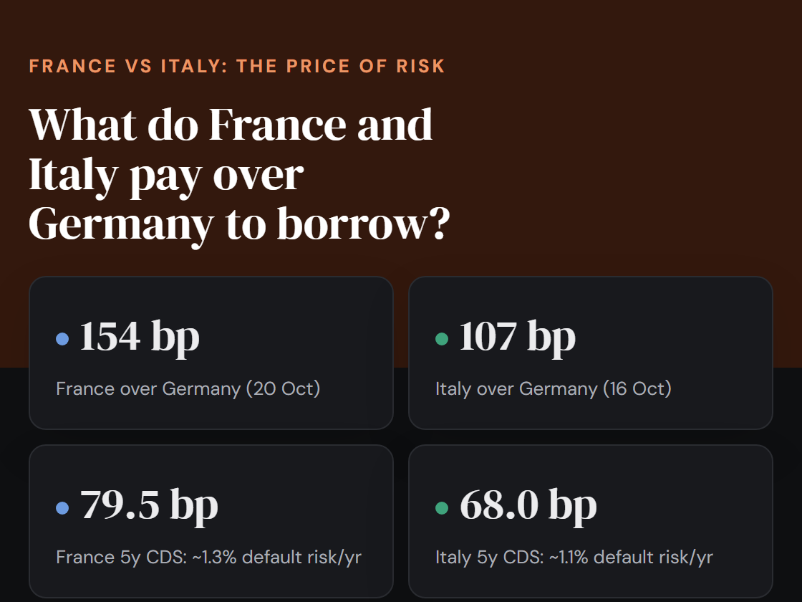
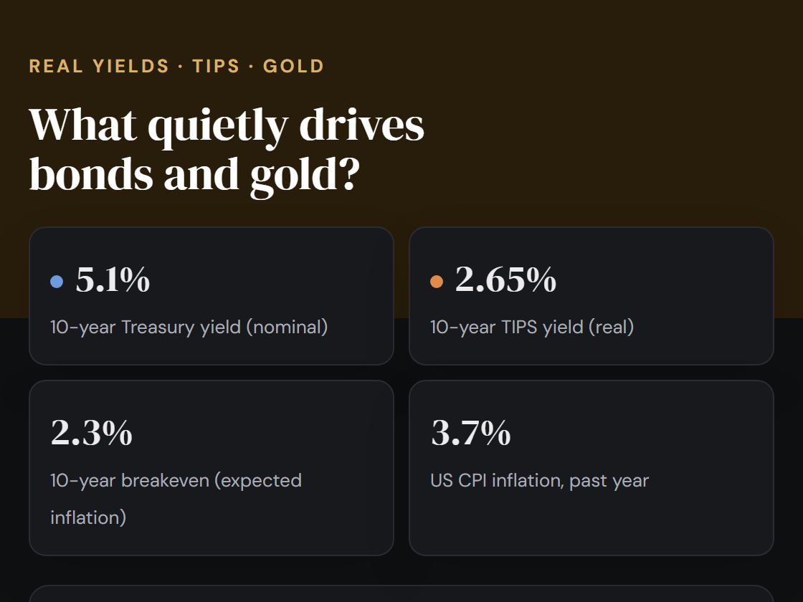

Featured studyNasdaq 100 vs bond yields
Is money rotating between big tech and bonds? Rolling correlations, a day-by-day scatter and what bonds did on tech's bad days.
All studies
5 more Volatility
Volatility
VIX vs realized volatility
Was the VIX right? Its forecast against the volatility that actually followed, around the dot-com crash, 2008, Covid and the 2025 tariff shock.
 Monetary policy
Monetary policy
Interest rates & Phillips curve
ECB and Fed policy rates, and whether near-zero rates brought a recovery in 2008 and Covid (Phillips curve view).
 International trade
International trade
Trade surplus & deficit map
Who sells more to the world than it buys? Every country's trade balance in goods, and arrows to its top export and import partners.

Sovereign debtFrance vs Italy risk premium
What France and Italy pay over Germany to borrow, credit default swaps, and the October 2026 protests in both countries.

Fixed income · CommoditiesGold vs real yields
Why do bonds and gold move with the real yield? TIPS, expected inflation and CPI explained step by step, with sliders to try it yourself.